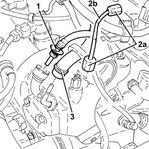
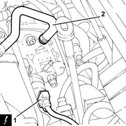
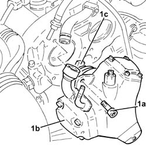
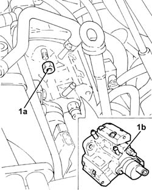
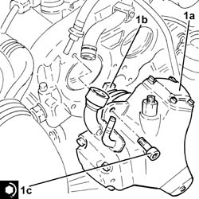
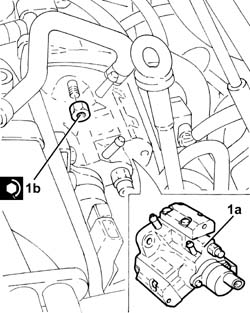
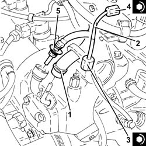

1060E10 pressure pump - r r
- Path
- Procedures > 10 ENGINE > 1060 DIESEL FUEL INJECTION > 1060E diesel pressure pump > 1060E10 pressure pump - r r
- Kind
- repair procedure (removal / refitting; the operation number is the code)
- Applies to
- all engines; all production periods
- Interactive page
- https://sloeber94.github.io/elrnDB-fDbl/en/#/2584402
Applies to: all engines; all production periods
 Removing
Removing
 Refitting
RefittingEnsure that the ignition key is in the OFF position, then disconnect the negative battery terminal.
 | Name | Connector |
|---|---|---|
- | Battery | A1 |
Carry out 5530B10 battery - r+r .
Carry out 5530B52 Battery DRIP TRAY/SUPPORT - R.R. .
Carry out 3330D30 vacuum pump - r+r .
1. Disconnect the rapid connector for the fuel supply pipe from the fuel filter to the pressure pump, pressure pump side.
2. Undo the connectors (2a) and remove the pipe from the pressure pump to the fuel manifold (2b).
3. Loosen the band and disconnect the fuel return pipe from the pressure pump, pressure pump side.

Applies to: all engines; all production periods
Removing
RefittingPosition the vehicle on the ramp.
Proceed with the removal 1044B10 fuel filter assembly - r + r or replace .
Proceed with the removal 1080C24 e.g.r. system solenoid - r + r .
Proceed with the removal 1060F50 fuel return manifold - r r .
Proceed with the removal 1060F36 lines to injectors - r r .
Proceed with the removal 1060F20 pressure pump/manifold pipe - r r .
Proceed with the removal 4450B04 right front wheel r r .
Proceed with the removal 1092G10 single engine belt r r .
Proceed with the removal 1092A10 Crankshaft services PULLEY - R.R. .
Proceed with the removal 1008A46 .
Proceed with the removal 1032D12 timing system protective cover(s) - r + r .
Proceed with the removal 1032B10 toothed timing belt - r + r for timing adjustment or replacement .
Proceed with the removal 1060E30 pressure pump pulley - r r .
Proceed with the removal 1060G72 solenoid on vacuum tank for throttle body pneumatic valve r r .
1. Disconnect the electrical connection from the fuel pressure regulator on the pressure pump.
| Name | Connector |
|---|---|---|
1 | Fuel pressure regulator | N77 |
2. Loosen the collar and disconnect the fuel inlet pipe from the pressure pump.

Applies to: all engines; all production periods
1. Undo the bolts (1a) and remove the pressure pump (1b) complete with O-ring and joint (1c).

Applies to: all engines; all production periods
1. Undo nuts (1a) and remove pressure pump (1b).

Applies to: all engines; all production periods
Refitting
Removing1. Refit in its seating the pressure pump (1a) complete with joint (1b) and new O-ring, then tighten the bolts (1c) to the specified torque.
 | Fastening | Component | Ø | Value (daNm) |
|---|---|---|---|---|
1c | Bolt | PRESSURE PUMP | M7 | (Camshaft housing side) 1.4 ÷ 1.7 |

Applies to: all engines; all production periods
Refitting
Removing1. Fit the clutch pump (1a) back in its housing and tighten the nuts (1b) to the specified torque.
| Fastening | Component | Ø | Value (daNm) |
|---|---|---|---|---|
1b | Nut | PRESSURE PUMP | M8 | (Support side) 2.3 ÷ 2.8 |

Applies to: all engines; all production periods
1. Connect the fuel return pipe from the pressure pump, pressure pump side, and tighten the band.
2. Place the pipe from the pressure pump to the single fuel manifold back in its housing and fix it using the connectors without tightening them.
3. Tighten the connector for the pipe from the pressure pump to the single fuel manifold, pump side, to the recommended torque using a suitable spanner.
| Fastening | Component | Ø | Value (daNm) |
|---|---|---|---|---|
3 | Connector | PRESSURE PUMP LINE TO FUEL MANIFOLD | M12 | (Pressure pump side) 2.3 ÷ 2.5 |
4. Tighten the connector for the pipe from the pressure pump to the single fuel manifold, fuel manifold side, to the recommended torque using a suitable spanner.
| Fastening | Component | Ø | Value (daNm) |
|---|---|---|---|---|
4 | Connector | PRESSURE PUMP LINE TO FUEL MANIFOLD | M14 | (Fuel manifold side) 2.7 ÷ 2.9 |
5. Connect the rapid connector for the fuel supply pipe from the filter to the pressure pump, pressure pump side.

Applies to: all engines; all production periods
Connect the fuel inlet pipe to the pressure pump and tighten the band.
Disconnect the electrical connection from the fuel pressure regulator on the pressure pump.
Proceed with the refitting 1060G72 solenoid on vacuum tank for throttle body pneumatic valve r r .
Proceed with the refitting 1060E30 pressure pump pulley - r r .
Proceed with the refitting 1032B10 toothed timing belt - r + r for timing adjustment or replacement .
Proceed with the refitting 1032D12 timing system protective cover(s) - r + r .
Proceed with the refitting 1008A46 .
Proceed with the refitting 1092A10 Crankshaft services PULLEY - R.R. .
Proceed with the refitting 1092G10 single engine belt r r .
Proceed with the refitting 4450B04 right front wheel r r .
Proceed with the refitting 1060F20 pressure pump/manifold pipe - r r .
Proceed with the refitting 1060F36 lines to injectors - r r .
Proceed with the refitting 1060F50 fuel return manifold - r r .
Proceed with the refitting 1080C24 e.g.r. system solenoid - r + r .
Proceed with the refitting 1044B10 fuel filter assembly - r + r or replace .
Remove the car from the ramp.
Applies to: all engines; all production periods
Carry out 3330D30 vacuum pump - r+r .
Carry out 5530B52 Battery DRIP TRAY/SUPPORT - R.R. .
Carry out 5530B10 battery - r+r .
Connect the battery negative terminal.
| Name | Connector |
|---|---|---|
- | Battery | A1 |
Topics linked from this page (16)
- 1008a46 cam shaft left rigid mount - r r
- 1032B10 toothed timing belt - r + r for timing adjustment or replacement
- 1032D12 timing system protective cover(s) - r + r
- 1044B10 fuel filter assembly - r + r or replace
- 1060E30 pressure pump pulley - r r
- 1060F20 pressure pump/manifold pipe - r r
- 1060F36 lines to injectors - r r
- 1060F50 fuel return manifold - r r
- 1060G72 solenoid on vacuum tank for throttle body pneumatic valve r r
- 1080C24 e.g.r. system solenoid - r + r
- 1092A10 Crankshaft services PULLEY - R.R.
- 1092G10 single engine belt r r
- 3330D30 vacuum pump - r+r
- 4450B04 right front wheel r r
- 5530B10 battery - r+r
- 5530B52 Battery DRIP TRAY/SUPPORT - R.R.